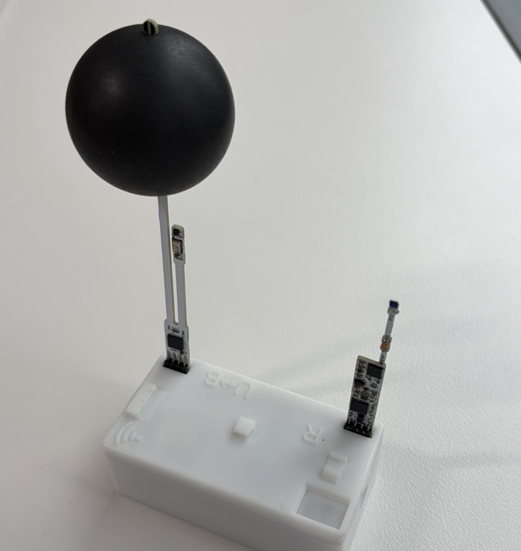

English / Japanese
建築の室内温熱環境を計測するための、小型の計測器です。

本体の基本操作と、スマートフォンアプリ・PC (MLServer)・Python ツールの使い方。
本体またはスマートフォンアプリに表示される ID で、個体ごとの成績を閲覧できます (英語表記)。
出荷時試験成績 / 風速プローブの校正成績
基板・ケースの設計データ、部品表、ファームウェアとソフトウェアのソースコード、通信仕様を公開しています。
飛行機内の熱環境 / 乾球温度と放射温度の違い (赤外線ヒーター) / 温室 / ぎふメディアコスモスの自然採光
床吹出空調の実験室に 85 台を設置し、3 秒間隔で計測した例です (球の大きさが風速、色が乾球温度)。
3.3.17 (2024年6月〜2025年2月販売) /
3.3.20 (2025年3月〜2025年9月販売) /
3.4.1 (2025年10月〜2026年5月販売)
スマートフォンアプリ・MLServer は v3 にも対応しています。